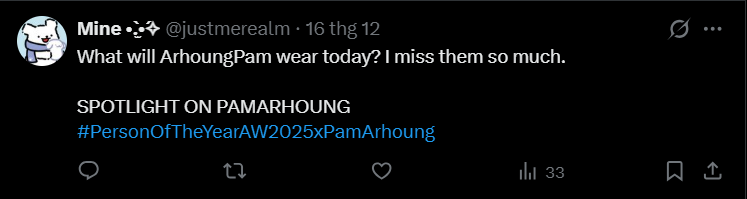

Theo nông dân tìm hiểu nguồn từ nhiều nơi
Trending theo múi giờ UTC+7
HƯỚNG DẪN TREND X
1. Chuẩn bị tài khoản
- Tối thiểu 20 người theo dõi và theo dõi ít nhất 30 tài khoản.
- Đặt tài khoản ở chế độ công khai.
- Nên có tối thiểu 100+ người theo dõi (tốt nhất 500+) để đẩy hashtag nhanh hơn.
- Không bị shadowban (check trước khi trend)
2. Khi đăng bài
- Dùng đúng Keyword (KW) và Hashtag chính đã được thông báo (tối đa 3 hashtag).
- Caption, KW, hashtag cách nhau 1 dòng, không viết dính.
- Trend đúng khung giờ được thông báo, không đăng thử trước giờ quy định.
- Nội dung nên liên quan đến chủ đề TP trong ngày.
3. Thời gian vàng
- 15 phút đầu: Chỉ đăng chữ (≥15 ký tự), không icon, không ảnh/video/gif.
 - Sau 15 phút: Có thể thêm icon, ảnh, video kèm KW + hashtag.
- Sau 1 giờ: Gắn thêm tag phụ để tăng độ phổ biến:
#hashtags idols
#hashtags idols bằng tiếng Thái
#hashtags idols bằng tiếng Thái
4. Tương tác
- Like, comment, retweet các bài cùng trend.
- Ưu tiên bài Drop & Tag (tương tác cao, hạn chế bị đánh spam).
- Khi retweet bài chính thức hoặc acc lớn, luôn kèm KW + hashtag.
5. Lưu ý quan trọng
- Không đăng/cmt quá nhanh (chờ tối thiểu 2–3 phút).
- Không lặp lại cùng một hành động liên tục.
- Không gắn link.
- Tránh từ ngữ gây tranh cãi/hạn chế.
- Trend kéo dài trong vòng 24 giờ.
6. Link check tài khoản X
⚠️ Đây là công cụ bên thứ ba, kết quả có thể không chính xác 100%. Nên kiểm tra 2–3 lần để có kết quả tốt nhất.
Trân trọng,
Nông dân đu gei Thái